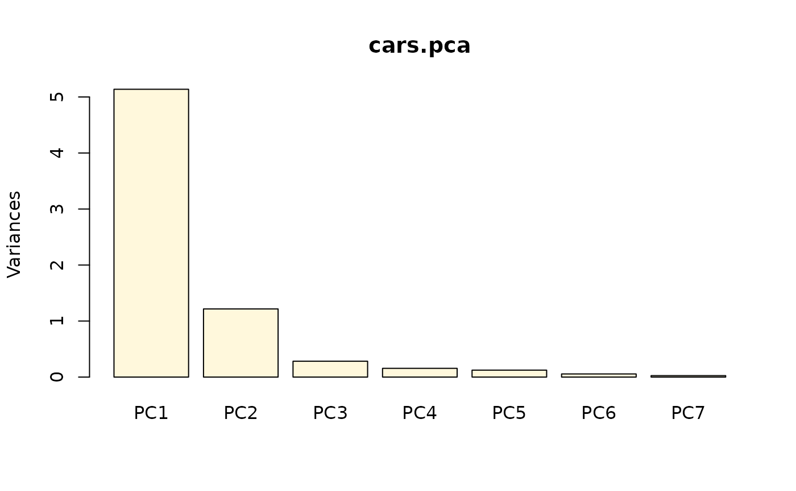
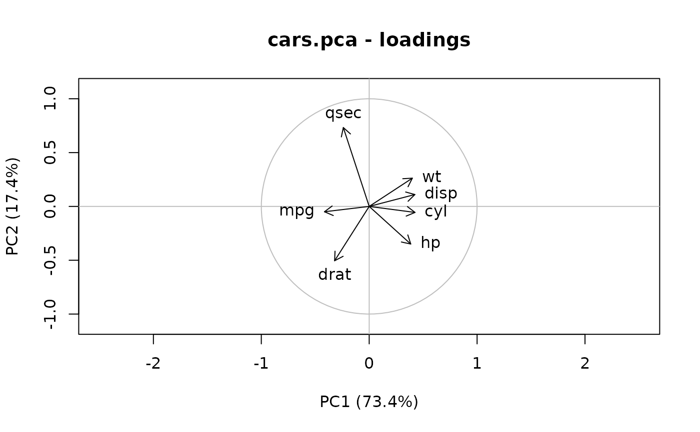
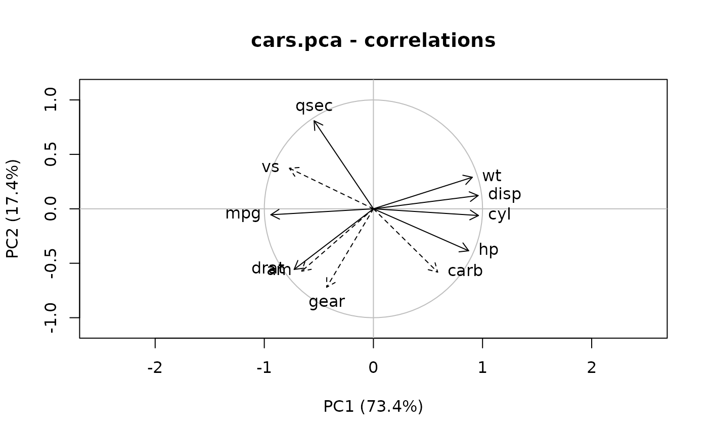
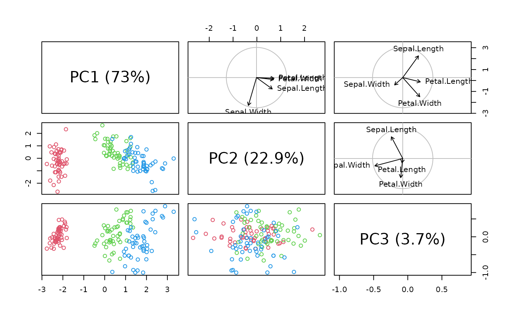

Perform a principal components analysis (PCA) on a matrix or data frame and
return a pcomp object.
pcomp(x, ...)
# S3 method for formula
pcomp(formula, data = NULL, subset, na.action, method = c("svd", "eigen"), ...)
# S3 method for default
pcomp(
x,
method = c("svd", "eigen"),
scores = TRUE,
center = TRUE,
scale = TRUE,
tol = NULL,
covmat = NULL,
subset = rep(TRUE, nrow(as.matrix(x))),
...
)
# S3 method for pcomp
print(x, ...)
# S3 method for pcomp
summary(object, loadings = TRUE, cutoff = 0.1, ...)
# S3 method for summary.pcomp
print(x, digits = 3, loadings = x$print.loadings, cutoff = x$cutoff, ...)
# S3 method for pcomp
plot(
x,
which = c("screeplot", "loadings", "correlations", "scores"),
choices = 1L:2L,
col = par("col"),
bar.col = "gray",
circle.col = "gray",
ar.length = 0.1,
pos = NULL,
labels = NULL,
cex = par("cex"),
main = paste(deparse(substitute(x)), which, sep = " - "),
xlab,
ylab,
...
)
# S3 method for pcomp
screeplot(
x,
npcs = min(10, length(x$sdev)),
type = c("barplot", "lines"),
col = "cornsilk",
main = deparse(substitute(x)),
...
)
# S3 method for pcomp
points(
x,
choices = 1L:2L,
type = "p",
pch = par("pch"),
col = par("col"),
bg = par("bg"),
cex = par("cex"),
...
)
# S3 method for pcomp
lines(
x,
choices = 1L:2L,
groups,
type = c("p", "e"),
col = par("col"),
border = par("fg"),
level = 0.9,
...
)
# S3 method for pcomp
text(
x,
choices = 1L:2L,
labels = NULL,
col = par("col"),
cex = par("cex"),
pos = NULL,
...
)
# S3 method for pcomp
biplot(x, choices = 1L:2L, scale = 1, pc.biplot = FALSE, ...)
# S3 method for pcomp
pairs(
x,
choices = 1L:3L,
type = c("loadings", "correlations"),
col = par("col"),
circle.col = "gray",
ar.col = par("col"),
ar.length = 0.05,
pos = NULL,
ar.cex = par("cex"),
cex = par("cex"),
...
)
# S3 method for pcomp
predict(object, newdata, dim = length(object$sdev), ...)
# S3 method for pcomp
correlation(x, newvars, dim = length(x$sdev), ...)
scores(x, ...)
# S3 method for pcomp
scores(x, labels = NULL, dim = length(x$sdev), ...)Arguments
| x | A matrix or data frame with numeric data. |
|---|---|
| ... | Arguments passed to or from other methods. If |
| formula | A formula with no response variable, referring only to numeric variables. |
| data | An optional data frame (or similar, see |
| subset | An optional vector used to select rows (observations) of the
data matrix |
| na.action | A function which indicates what should happen when the data
contain |
| method | Either |
| scores | A logical value indicating whether the score on each principal component should be calculated. |
| center | A logical value indicating whether the variables should
centered. Alternately, a vector of length equal the number of columns of |
| scale | A logical value indicating whether the variables should be
scaled to have unit variance before the analysis takes place. The default is
|
| tol | Only when |
| covmat | A covariance matrix, or a covariance list as returned by
|
| object | A 'pcomp' object. |
| loadings | Do we also summarize the loadings? |
| cutoff | The cutoff value below which loadings are replaced by white spaces in the table. That way, larger values are easier to spot and to read in large tables. |
| digits | The number of digits to print. |
| which | The graph to plot. |
| choices | Which principal axes to plot. For 2D graphs, specify two integers. |
| col | The color to use in graphs. |
| bar.col | The color of bars in the screeplot. |
| circle.col | The color for the circle in the loadings or correlations plots. |
| ar.length | The length of the arrows in the loadings and correlations plots. |
| pos | The position of text relative to arrows in loadings and correlation plots. |
| labels | The labels to write. If |
| cex | The factor of expansion for text (labels) in the graphs. |
| main | The title of the graph. |
| xlab | The label of the x-axis. |
| ylab | The label of the y-axis. |
| npcs | The number of principal components to represent in the screeplot. |
| type | The type of screeplot ( |
| pch | The type of symbol to use. |
| bg | The background color for symbols. |
| groups | A grouping factor. |
| border | The color of the border. |
| level | The probability level to use to draw the ellipse. |
| pc.biplot | Do we create a Gabriel's biplot (see |
| ar.col | Color of arrows. |
| ar.cex | Expansion factor for text on arrows. |
| newdata | New individuals with observations for the same variables as those used for calculating the PCA. You can then plot these additional individuals in the scores plot. |
| dim | The number of principal components to keep. |
| newvars | New variables with observations for same individuals as those used for calculating the PCA. Correlation with PCs is calculated. You can then plot these additional variables in the correlation plot. |
Value
A c("pcomp", "pca", "princomp") object.
Details
pcomp() is a generic function with "formula" and "default"
methods. It is essentially a wrapper around prcomp() and princomp() to
provide a coherent interface and object for both methods.
A 'pcomp' object is created. It inherits from 'pca' (as in labdsv package, but not compatible with the version of 'pca' in ade4) and of 'princomp'.
For more information on algorithms, refer to prcomp() for
method = "svd" or princomp() for method = "eigen".
Note
The signs of the columns for the loadings and scores are arbitrary. So, they could differ between functions for PCA, and even between different builds of R.
See also
Author
Philippe Grosjean phgrosjean@sciviews.org, but the core code is indeed in package stats.
Examples
# Let's analyze mtcars without the Mercedes data (rows 8:14)
data(mtcars)
cars.pca <- pcomp(~ mpg + cyl + disp + hp + drat + wt + qsec,
data = mtcars, subset = -(8:14))
cars.pca
#> Call:
#> pcomp(formula = ~mpg + cyl + disp + hp + drat + wt + qsec, data = mtcars,
#> subset = -(8:14))
#>
#> Variances:
#> PC1 PC2 PC3 PC4 PC5 PC6 PC7
#> 5.13759552 1.21698212 0.28325478 0.15620899 0.12409321 0.05604916 0.02581622
#>
#> 7 variables and 25 observations.
summary(cars.pca)
#> Importance of components (eigenvalues):
#> PC1 PC2 PC3 PC4 PC5 PC6 PC7
#> Variance 5.138 1.217 0.2833 0.1562 0.1241 0.05605 0.02582
#> Proportion of Variance 0.734 0.174 0.0405 0.0223 0.0177 0.00801 0.00369
#> Cumulative Proportion 0.734 0.908 0.9483 0.9706 0.9883 0.99631 1.00000
#>
#> Loadings (eigenvectors, rotation matrix):
#> PC1 PC2 PC3 PC4 PC5 PC6 PC7
#> mpg -0.415 -0.107 0.754 -0.353 0.318 0.144
#> cyl 0.425 -0.165 0.447 0.289 -0.485 0.521
#> disp 0.423 -0.110 0.234 0.465 0.103 -0.726
#> hp 0.385 0.349 0.106 -0.817 -0.203
#> drat -0.320 0.505 0.736 0.208 -0.222
#> wt 0.400 -0.262 0.499 0.590 0.416
#> qsec -0.240 -0.733 0.323 -0.267 -0.475
screeplot(cars.pca)

# Loadings are extracted and plotted this way:
(cars.ldg <- loadings(cars.pca))
#>
#> Loadings:
#> PC1 PC2 PC3 PC4 PC5 PC6 PC7
#> mpg -0.415 -0.107 0.754 -0.353 0.318 0.144
#> cyl 0.425 -0.165 0.447 0.289 -0.485 0.521
#> disp 0.423 -0.110 0.234 0.465 0.103 -0.726
#> hp 0.385 0.349 0.106 -0.817 -0.203
#> drat -0.320 0.505 0.736 0.208 -0.222
#> wt 0.400 -0.262 0.499 0.590 0.416
#> qsec -0.240 -0.733 0.323 -0.267 -0.475
#>
#> PC1 PC2 PC3 PC4 PC5 PC6 PC7
#> SS loadings 1.000 1.000 1.000 1.000 1.000 1.000 1.000
#> Proportion Var 0.143 0.143 0.143 0.143 0.143 0.143 0.143
#> Cumulative Var 0.143 0.286 0.429 0.571 0.714 0.857 1.000
plot(cars.pca, which = "loadings") # Equivalent to vectorplot(cars.ldg)

# Similarly, correlations of variables with PCs are extracted and plotted:
(cars.cor <- Correlation(cars.pca))
#> Matrix of PCA variables and components correlation:
#> PC1 PC2 PC3 PC4 PC5 PC6 PC7
#> mpg -0.940 0.055 -0.057 0.298 -0.124 0.075 0.023
#> cyl 0.963 0.062 -0.088 0.177 0.102 -0.115 0.084
#> disp 0.960 -0.122 0.124 0.184 0.036 -0.003 -0.117
#> hp 0.873 0.385 0.056 -0.039 -0.288 -0.048 0.005
#> drat -0.726 0.557 0.392 0.030 0.073 -0.053 0.009
#> wt 0.906 -0.289 0.266 -0.006 0.004 0.140 0.067
#> qsec -0.544 -0.808 0.172 0.010 -0.094 -0.112 0.010
plot(cars.pca, which = "correlations") # Equivalent to vectorplot(cars.cor)
# One can add supplementary variables on this graph
lines(Correlation(cars.pca,
newvars = mtcars[-(8:14), c("vs", "am", "gear", "carb")]))

# Plot the scores:
plot(cars.pca, which = "scores", cex = 0.8) # Similar to plot(scores(x)[, 1:2])
#> Warning: NAs introduced by coercion
# Add supplementary individuals to this plot (labels), also points() or lines()
text(predict(cars.pca, newdata = mtcars[8:14, ]),
labels = rownames(mtcars[8:14, ]), col = "gray", cex = 0.8)
# Pairs plot for 3 PCs
iris.pca <- pcomp(iris[, -5])
pairs(iris.pca, col = (2:4)[iris$Species])
